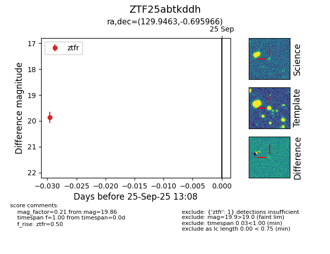

FINK: ZTF25abtkddh
Lasair: ZTF25abtkddh
ALeRCE: ZTF25abtkddh
ZTF25abtkddh (ztf,fink)
equatorial (ra, dec) = (129.9463,-0.69597)
galactic (l, b) = (226.7171,+23.55807)

last ztfr=19.86
1 ztfr detections